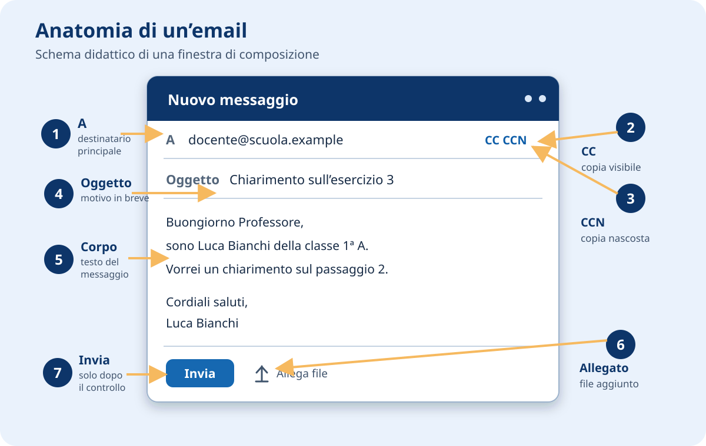
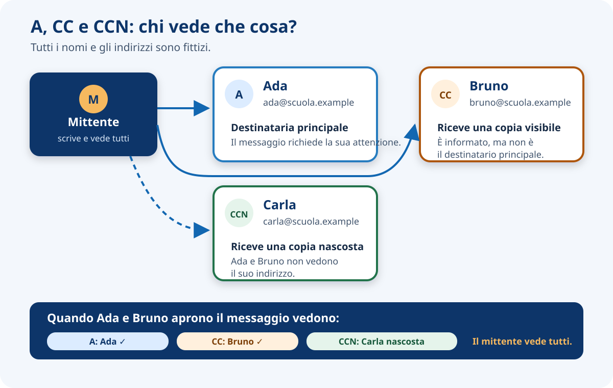
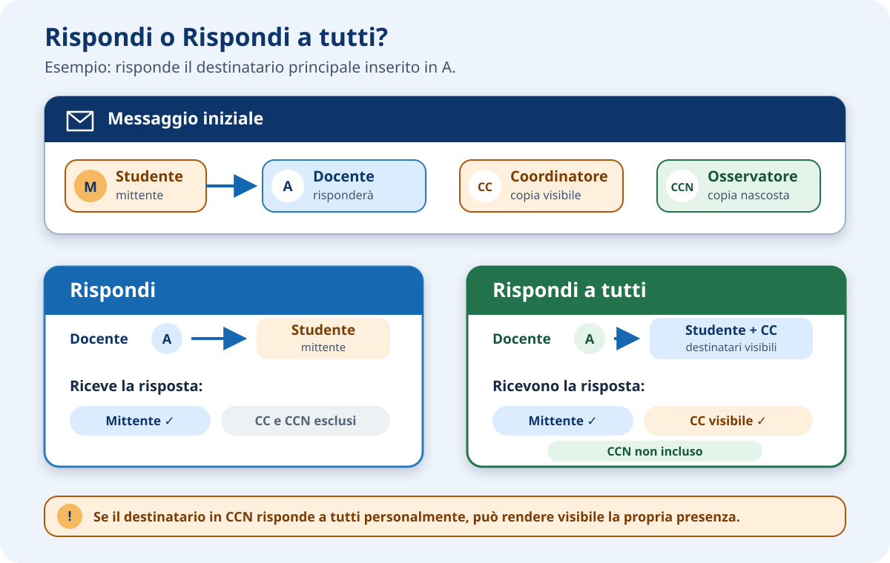
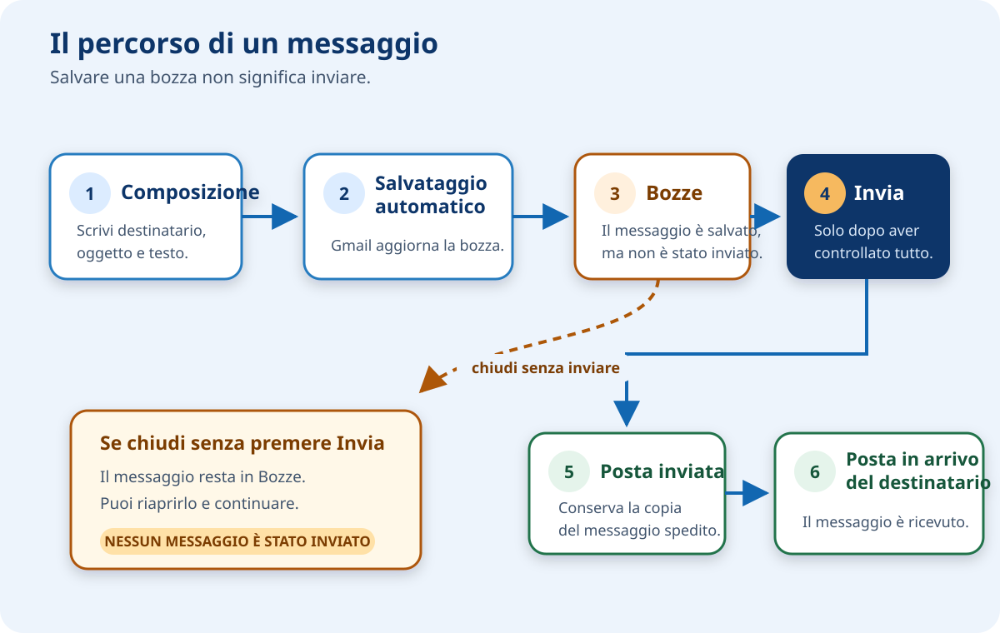

Gmail
Serve a comunicare inviando e ricevendo messaggi di posta elettronica.
Materiale integrativo · U0 · consolidamento
Schemi ed esempi per preparare un messaggio scolastico chiaro, educato e sicuro.
Una situazione concreta
Hai provato a svolgere un esercizio, ma un passaggio non è chiaro. Con Gmail puoi scrivere al professore e spiegare con precisione che cosa ti serve. Prima, però, devi scegliere il destinatario, formulare il messaggio e controllarlo.
Sezione A · Gli strumenti
Google Workspace è un insieme di applicazioni digitali utilizzabili con l’account scolastico. Ogni applicazione ha un compito diverso.
Serve a comunicare inviando e ricevendo messaggi di posta elettronica.
Serve a conservare e organizzare file. Lo approfondiremo in attività dedicate.
Serve a creare e modificare documenti di testo.
Serve a gestire le attività didattiche: materiali, compiti, consegne e restituzioni.
Sezione B · Il messaggio
La posta elettronica, chiamata anche email, è un sistema per scambiare messaggi digitali tra indirizzi. Nel nostro esempio uno studente scrive a un professore per chiedere un chiarimento.
Identifica una casella di posta. L’esempio fittizio studente@scuola.example contiene un nome, il simbolo @ e una parte finale che identifica l’organizzazione.
È la persona che invia il messaggio.
È la persona che riceve il messaggio.
È il testo che comunica l’informazione o la richiesta.
È un file aggiunto al messaggio, per esempio un documento in formato Portable Document Format (PDF), pensato per mantenere l’aspetto della pagina.
Sezione C · Comporre
Quando scegli Scrivi, Gmail apre una finestra in cui preparare il messaggio. L’immagine seguente è uno schema didattico, non uno screenshot ufficiale.

Contiene il destinatario principale: la persona da cui attendi una risposta o un’azione.
Copia conoscenza (CC): informa altre persone. Gli indirizzi in A e CC sono visibili ai destinatari.
Copia conoscenza nascosta (CCN): invia una copia senza mostrare quell’indirizzo agli altri destinatari. Non usarla senza una ragione chiara.
Riassume il motivo del messaggio in poche parole, per esempio Chiarimento sull’esercizio 3
.
Contiene saluto, richiesta, informazioni necessarie, conclusione e firma.
La graffetta aggiunge un file. Invia spedisce il messaggio: usalo soltanto dopo il controllo.
A, CC e CCN
Nella maggior parte dei messaggi scolastici basta il campo A. CC e CCN vanno usati soltanto quando sono davvero necessari.

| Campo | Quando usarlo | Esempio |
|---|---|---|
| A | La persona è il destinatario principale. | Chiedo un chiarimento al professore. |
| CC | Una seconda persona deve essere informata e tutti possono vedere il suo indirizzo. | Con autorizzazione, informo anche un altro docente coinvolto. |
| CCN | È necessario proteggere l’indirizzo di chi riceve una copia. | Uso raro in classe: va scelto solo per un motivo preciso. |
Esperienza in laboratorio · I destinatari della risposta
Durante la lezione uno studente ha inviato un’email al docente. Sul computer proiettato sulla Lavagna Interattiva Multimediale (LIM), il docente ha mostrato come cambiano i destinatari scegliendo Rispondi oppure Rispondi a tutti.
Invia la risposta al mittente del messaggio ricevuto.
Invia la risposta al mittente e agli altri destinatari visibili presenti nei campi A e CC, escludendo l’indirizzo di chi sta rispondendo.

Sezione D · Prima e dopo l’invio
Gmail salva automaticamente il messaggio mentre lo scrivi. Se chiudi la composizione senza inviare, il testo rimane normalmente in Bozze e puoi riprenderlo.

Messaggi iniziati ma non ancora inviati. Possono essere riaperti, corretti o eliminati.
Conserva i messaggi che hai spedito.
Raccoglie i messaggi ricevuti nella tua casella.
Sezione E · Scrivere a un professore
I nomi e gli indirizzi negli esempi sono inventati. Confronta i due messaggi.
Da migliorare
non ho capito niente mi dice cosa devo fare?
grazie
Che cosa manca? Un oggetto preciso, il saluto, il riferimento all’esercizio e alla classe, una richiesta specifica e la firma.
Esempio corretto
Buongiorno Professore,
sono Luca Bianchi della classe 1ª A. Non ho compreso il passaggio 2 dell’esercizio 3: devo inserire il risultato nel documento oppure allegare un PDF?
Grazie per l’aiuto.
Cordiali saluti,
Luca Bianchi
Sezione F · Aggiungere un file
Allegare significa aggiungere al messaggio una copia di un file, per esempio esercizio-3.pdf. Prima dell’invio controlla che il nome e il contenuto siano corretti.
Una copia del file viaggia insieme all’email. Se modifichi il file originale dopo l’invio, l’allegato già spedito non cambia.
Invii un collegamento a un documento conservato in Drive. L’accesso dipende dai permessi. Approfondiremo condivisione e permessi in seguito.
Sezione G · Comportamento responsabile
Verifica gli indirizzi prima di inviare.
Non inserire informazioni personali che non servono alla richiesta.
Se non riconosci il mittente o il file sembra insolito, non aprirlo e chiedi al docente.
Usa un tono educato e rileggi il messaggio.
Non aggiungere persone “per sicurezza” e non nascondere destinatari senza necessità.
Esercitazione · 20–25 minuti
Situazione: devi chiedere al professore un chiarimento su un esercizio che non hai compreso.
Traguardo: una bozza completa, educata e controllata. L’indirizzo del docente sarà comunicato in classe e non compare in questa pagina.
Controlla di usare il tuo account scolastico.
Seleziona Scrivi. Inserisci nel campo A l’indirizzo comunicato dal docente.
Indica l’attività e il punto da chiarire. Non usare soltanto Aiuto
.
Inserisci saluto, classe, riferimento all’esercizio, domanda specifica, conclusione e firma.
Rileggi destinatario, oggetto, tono, ortografia e firma. Non inserire CC o CCN se non richiesto.
Chiudi la composizione e verifica che il messaggio compaia in Bozze.
In Classroom trovi due date diverse per la stessa attività e vuoi sapere quale sia corretta. Decidi autonomamente chi inserire in A, se CC o CCN siano davvero necessari, quale oggetto usare e come formulare la richiesta. Non copiare il messaggio di esempio: prepara un testo adatto a questa situazione, motivando a voce la scelta dei destinatari. Salva il risultato in Bozze senza inviarlo.
Controllo finale
A indica il destinatario principale; CC informa una persona in copia. Gli indirizzi inseriti in entrambi i campi sono visibili ai destinatari.
Gli indirizzi in CC sono visibili agli altri destinatari; quelli in CCN restano nascosti agli altri destinatari.
No. È stato salvato automaticamente, ma il destinatario non lo ha ancora ricevuto. Dopo l’invio, la tua copia compare in Posta inviata.
Il messaggio è il testo dell’email; l’allegato è un file aggiunto, per esempio un PDF.
No. Gmail serve a comunicare con messaggi di posta elettronica; Classroom gestisce materiali, compiti e consegne didattiche.
Rispondi invia il nuovo messaggio al mittente. Rispondi a tutti include anche gli altri destinatari visibili presenti in A e CC, ma esclude chi sta rispondendo.
La risposta a tutti inviata da una persona in A o CC non include normalmente il destinatario in CCN. Se però la persona in CCN usa personalmente Rispondi a tutti, può rivelarsi agli altri perché il suo indirizzo compare come mittente della risposta.
In breve